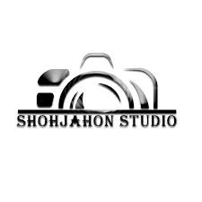
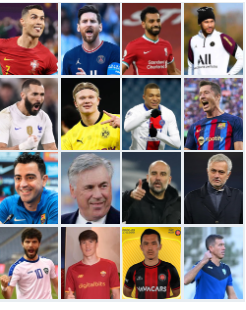
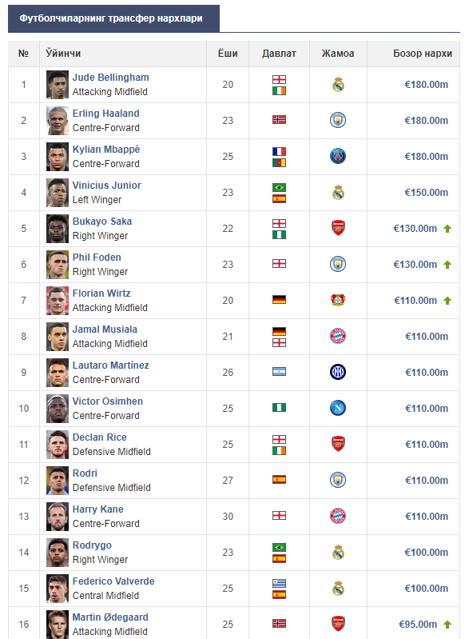

Захирага олинган Мбаппе Энрикени ҳақорат қилди

31 март, якшанба куни "ПСЖ" Лига 1нинг 27-тури доирасида "Ле-Классиcо"да сафарда "Марсел"ни мағлуб этди. Лукас Бералдонинг қизил карточка олганидан сўнг, 10 киши қолган парижликлар иккинчи бўлимда мезбонлар дарвозасига иккита гол урди.
65-дақиқада "ПСЖ" бош мураббийи Луис Энрике Килиан Мбаппе ўрнига Рамушни майдонга туширишга қарор қилди. Захирага олинишини ҳақидаги қарор 25 ёшли франциялик футболчига ёқмади. Майдонни тарк этар экан, Мбаппе аниқ Луис Энрикени ҳақорат қилди.
Милитао оғир жароҳатидан сўнг илк бор майдонга тушди

Эдер Милитао жиддий жароҳатдан сўнг илк бор майдонга тушди.
Мадриднинг “Реал” клуби ҳимоячиси Ла Лига доирасида “Атлетик”га (2:0) қарши ўйиннинг 92-дақиқасида Даниэль Карвахаль ўрнига майдонга тушди. Милитао Ла Лиганинг 1-турида "Атлетик"га қарши ўйинда тиззасидан жароҳат олиб, август ойидан бери майдонга тушмаётганди. "Мен жуда бахтлиман. Бу мен тушунтириб бера олмайдиган қувонч. Ўша кунлар оғир эди, лекин энди мен яна хурсандман.

Мадриднинг “Реал” клуби бош мураббийи Карло Анчелотти қишда марказий ҳимоячи сотиб олмоқчи эди. Relevo'га маълум бўлишича, Давид Алаба жароҳатидан сўнг "Лос-Бланкос" устози клубдан ҳимоя марказига янги ўйинчи сотиб олишни сўраган, бироқ раҳбарият италияликни рад этган.
Манбага кўра, "Реал" бошлиқлари, Аурелиен Тчуамени ёрдамида ҳимояни кучайтириш мумкинлигини ҳис қилишган. 30 турдан кейин "Реал" Испания чемпионати турнир жадвалида пешқадамлик қилмоқда. Анчелотти шогирдлари ҳисобида 75 очко бор. Иккинчи ўринда бораётган "Барселона" ўртасидаги фарқ саккиз очкони ташкил этади.
Biz haqimizda
SHOHJAHON STUDIO
Manzil:
Jizzax viloyati
Zomin tumani
Murojat uchun: 990096911
Galareya


Ishlab chiquvchi
Sherzodov Shohjahon
Jizzax viloyati
Zomin tumani